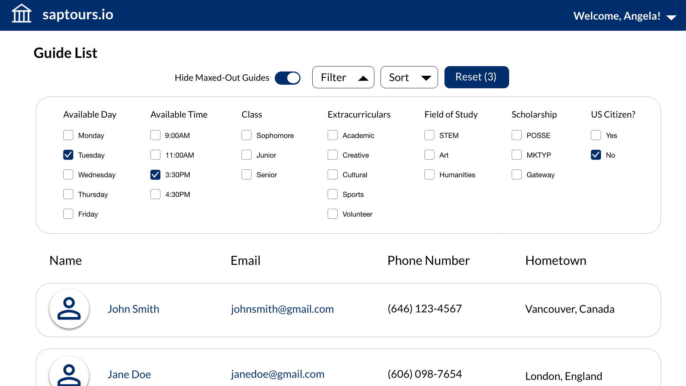
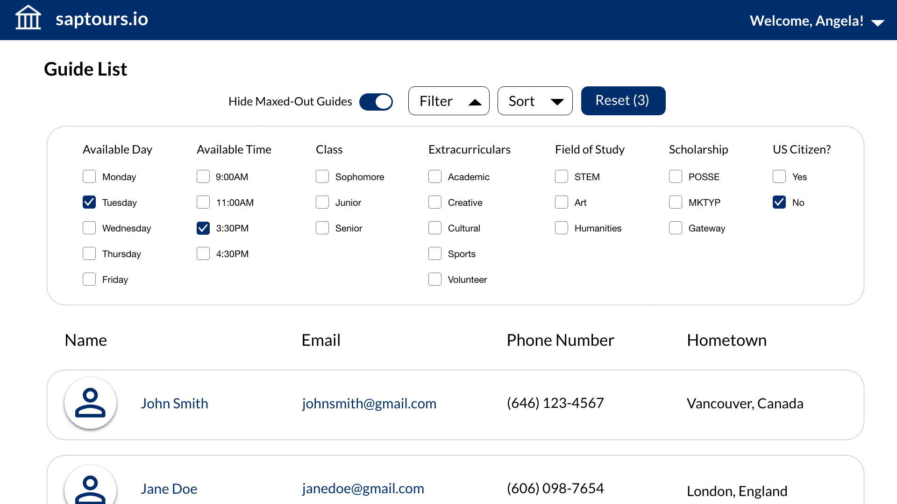
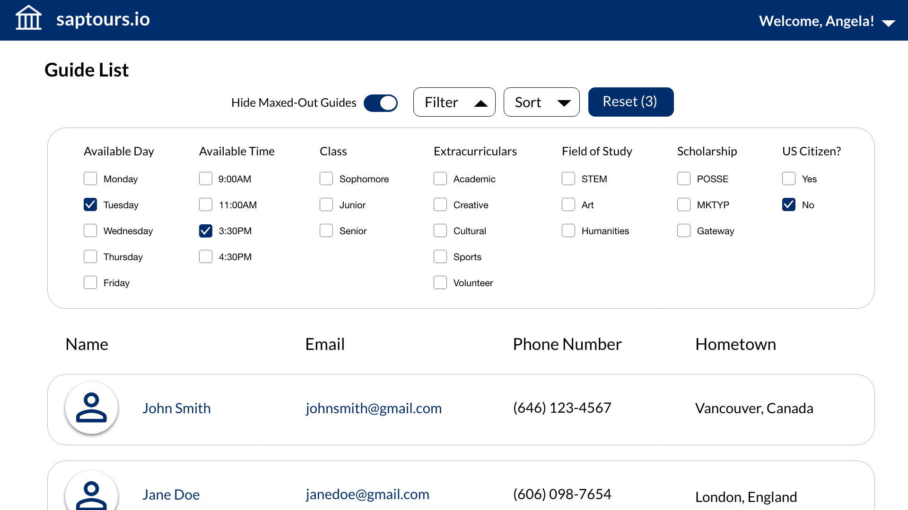

My friend, a developer, asked me to design a web application with him for Brandeis University's
admissions office that would allow college tour guides to effectively schedule tours. It is now currently in use.
Role: UX/UI Designer
Date: May - December, 2019
Tools: Adobe XD, Adobe Illustrator
The Challenge
My friend was a student tour guide for our alma mater, Brandeis University. The guides shared an
Excel sheet that contained everyone's information and a list of upcoming tours. On the
Excel sheet, guides could pick up available tours by typing their name next to them. Despite how straightforward this seemed, the Admissions Office was
finding that tours were not being picked up fast enough. The lead tour guides would often have to step in and assign tours, which was very
time-consuming. My friend, based on personal experience and the complaints of other guides, believed the problem
lay in the Excel sheet. Brandeis had tours throughout each week, even multiple times in a day, and 40+ guides, with more being hired each semester.
The sheet was a monstrous block of information that was difficult to navigate. As a result, my friend pitched the idea to develop a
tour-scheduling app and asked me to be the designer.
The tour-scheduling process, which relied on an Excel sheet, was too tedious.
How could I design an app that would make the process easier and more efficient?
User Research
The first step was understanding who our users were and what they needed. To do this, we consulted with the lead tour guides. Since my friend
was a regular student tour guide, I would also ask him questions on how their team functioned. I learned two key things:
1. Guides were meant to be fairly autonomous. They were expected to sign up for most tours themselves. If a guide needed to drop a tour,
they were also responsible for finding a replacement.
2. The lead tour guide does everything a regular guide does, with the added responsibility of sometimes assigning tours. Tours may
be assigned either due to lack of coverage, or because a specific guide would be a good fit for them (eg. if a tour group was made up of prospective international
students, a guide who was an international student themself should probably lead them).
Based on these facts, I determined that there were two types of users: regular tour guides and lead tour guides. I created
personas for them to cement my understanding:
I also created journey maps to highlight the steps they took to achieve their goals:
Essentially, the regular and lead guides needed these features:
1. The ability to immediately see what tours were available and pick them up.
2. The ability to find other guides' info, so that they could contact them.
3. The ability to set/edit their availability, so that other guides can see if they could possibly cover a certain tour.
Since guides are all busy students, there should also be a way to ensure no one is contacted too often.
4. The lead guides specifically needed the ability to find everyone's backgrounds for tour matching.
App Research
Once we had a good idea on the user base, we needed to figure out what type of platform to build. We asked the guides what device they used when scheduling tours and found all of them pretty exclusively used their laptops.
Web app was definitely the way to go, which was lucky for my friend since it would be slightly easier for him to code than mobile.
In terms of the app's interface, we felt a calendar-based app made the most sense, since
it would clearly show all the tour times for each month. I researched calendar apps, such as Google Calendar, to see what the best practices were.
As I mentioned before, sometimes a guide will be assigned to a specific tour. In order to determine if a guide would be a good fit for a tour,
their personal information, such as field of study or hometown, would have to be stored somewhere. I looked into social media apps, such as Facebook, for inspiration on how a profile should be designed.
The Result
Now that the research was done, it was time to design! I created a few drafts, going back and forth with my friend to see
what he was able or unable to develop. Eventually, I reached a design that I was happy with and also seemed feasible enough.
My design did not end up being fully implemented, due to further technical limitations. However, the general idea is there. Below is my vision.
The home page. The calendar interface makes it intuitive to use. Guides can instantly see all the tours for that month and know from the colored dots
which ones need coverage. There is a legend at the top in case they forget what a color represents.
Guides have the option to only view their own tours. They can also download the calendar so they have a copy of it. At the upper right corner is a
dropdown menu where guides can access other pages.
Covering a tour. Guides can click on each tour and find information
about it. We included a section on how many guides were needed and how many were currently covering so that the lead guides knew how many more to
add if need be. They can also see who is already covering the tour.
Profile page. Guides fill out all their information here.
Following what I saw in social media profiles, the information is organized into different categories. When viewing another guide's profile, the setup is the same as here except there's no
save button.
Guides indicate their availability here. To help prevent a guide from being assigned too many tours, I added a space where they could enter a minimum/maximum number
of tours per month. This feature works with the guide list which I'll discuss next.

The guide list. Since guides are responsible for finding a replacement if they need to drop a tour,
I made a page where everyone's contact info is clearly displayed. Their emails are also linked for extra convenience. One problem with the Excel sheet was the
lack of organization, so I included a filter and sort. Guides can sort the list to their liking, for example, by alphabetical order. The filter is more
for the lead guides. To see which guides could be a match for a specific tour, the lead guides can filter the list by field of study or US citizenship. I considered displaying
every piece of information in the list, but since there's so much, I was afraid it would end up overwhelming the guides. As a result, I have the list, by default, only
show the guides' contact info. Through the filters, leads can display relevant information. If the leads wanted to see a more comprehensive background,
they would click on the guide's name to view their profile. There is also a toggle to hide guides who have hit their maximum number of tours for the month.
We named our app SAPTours (Student Ambassador Program Tours).
My friend finished coding it and released it in December 2019. It is now currently being used. We received a lot of positive responses: guides
have been finding it easy to use and are picking up more tours on their own.
Reflection
This project was a great opportunity for me because it was an app that was actually
going to be used. I can see how my design helped solve a real problem people were facing, which was incredibly fulfilling.
I learned a lot about compromise. The developer is not always going to be able to
implement all of my ideas. The client's needs and priorities won't always align with my vision. Keeping these in mind
definitely affected my approach to designing. I also found myself grateful for my Computer Science background, since I was able
to communicate with the developer in the same language.
Moving forward, we may need to update the app to support any future needs. There were
also some features we were unable to implement but would like to one day, such as tour statistics. If I were to redo the project, I would test my design before its official release
to ensure we were headed in the right direction.


 
